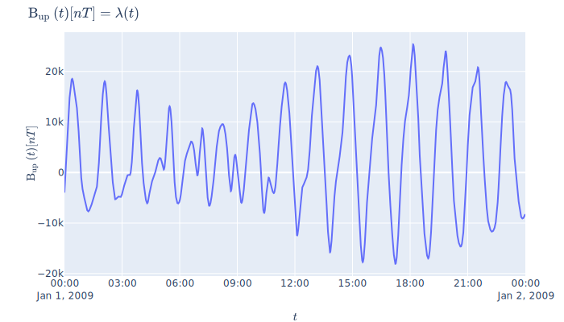

About¶
This project tracks development of the kamodo-pysat interface. While pysat focuses on providing a unified way of retrieving, loading and cleaning instrument data, Kamodo provides a math-oriented API for interpolation, function composition, and quick-look graphics. The combination of the two approaches simplifies the workflow for science users, while minimizing the effort needed for science discovery.
Requirements¶
pysat_kamodo requires pysat and kamodo:
pip install pysat
pip install kamodo
The following are needed for writing publication-ready graphics:
conda install -c plotly plotly-orca
conda install psutil
To generate the documentation site:
pip install mkdocs
pip install mknotebooks
pip install python-markdown-math
pip install markdown-include
mkdocs serve (from base directory)
Tutorial¶
# If you are running this notebook, call this cell first until we get this on pip
import sys
sys.path.append('..')
from pysat_kamodo import Pysat_Kamodo
import pysat
Note
pysat will notify you if it needs to set up default directories for the initial import
Instrument Initialization¶
To initialize a pysat instrument, we require that a date be specified along with the usual pysat keyword arguments:
import pandas as pd
pki = Pysat_Kamodo(pd.datetime(2009,1,1), # required by Pysat_Kamodo
platform = 'cnofs', # pysat keyword
name='vefi', # pysat keyword
tag='dc_b',# pysat keyword
)
pki
Returning cnofs vefi dc_b data for 01 January 2009
The above Kamodo instance shows all available variables from the pysat cnofs vefi instrument together with units. The left-hand side of these equations represents the variables loaded by pysat. The right-hand side expressions mean that there is some time interpolator defined for these variables that is not in closed form.
Interpolation¶
These "Kamodofied" variables support automatic time interpolation. First let's specify a few arbitrary moments in time.
t1 = pd.datetime(2009, 1, 1, 3, 39, 45)
t2 = pd.datetime(2009, 1, 1, 3, 42, 33)
t3 = pd.datetime(2009, 1, 1, 3, 51, 10)
times = [t1, t2, t3]
To interpolate a given variable at these times, call the variable with those times:
pki.B_up(times)
2009-01-01 03:39:45 12086.362305
2009-01-01 03:42:33 14458.384766
2009-01-01 03:51:10 14879.630859
Name: B_up, dtype: float32
Our Kamodo object uses the native instrument time as a default. This means we can easily retrieve the original raw data by not specifying a time:
# head pandas method just shows the first 5 results
pki.B_up().head()
2009-01-01 00:00:00 -3984.774658
2009-01-01 00:00:01 -3966.702637
2009-01-01 00:00:02 -3951.631592
2009-01-01 00:00:03 -3936.454102
2009-01-01 00:00:04 -3921.183594
Name: B_up, dtype: float32
Visualization¶
Kamodo uses plotly for visualization and easy web deployment. The default time allows Kamodo to determine an appropriate range for these quick-look graphics.
import plotly.io as pio
fig = pki.plot('B_up')
pio.write_image(fig, 'figure1.svg')

Interactive plotting¶
To plot interacvtively in the notebook use plotly's iplot and plot tools.
from plotly.offline import init_notebook_mode, plot, iplot
init_notebook_mode(connected = True)
# renders in notebook cell
iplot(fig)
# saves to html and opens in new browser tab
plot(fig)
Note
Writing image to file requires plotly-orca (conda install -c plotly plotly-orca) and psutil (pip install psutil)
PyHC standards¶
Pysat_Kamodo objects have data and meta attributes, in keeping with the Python-in-Heliophysics Community standards. These are not to be confused with pysat's data and meta attributes, which are stored in Pysat_Kamodo._instrument.meta and Pysat_Kamodo._instrument.data, respectively.
Pysat_Kamodo meta attributes¶
The meta attribute illustrates Kamodo's minimalistic view of the world: under the hood, Kamodo uses the symbolic programing library Sympy, so it only needs to keep track of symbols and units.
pki.meta
| lhs | rhs | symbol | units | |
|---|---|---|---|---|
| B_north(t) | B_north | None | B_north(t) | nT |
| B_up(t) | B_up | None | B_up(t) | nT |
| B_west(t) | B_west | None | B_west(t) | nT |
| B_IGRF_north(t) | B_IGRF_north | None | B_IGRF_north(t) | nT |
| B_IGRF_up(t) | B_IGRF_up | None | B_IGRF_up(t) | nT |
| B_IGRF_west(t) | B_IGRF_west | None | B_IGRF_west(t) | nT |
| latitude(t) | latitude | None | latitude(t) | degrees |
| longitude(t) | longitude | None | longitude(t) | degrees |
| altitude(t) | altitude | None | altitude(t) | km |
| dB_zon(t) | dB_zon | None | dB_zon(t) | nT |
| dB_mer(t) | dB_mer | None | dB_mer(t) | nT |
| dB_par(t) | dB_par | None | dB_par(t) | nT |
| year(t) | year | None | year(t) | |
| dayofyear(t) | dayofyear | None | dayofyear(t) | |
| B_flag(t) | B_flag | None | B_flag(t) |
Kamodo also has some book-keeping metadata tied to indvidual variables:
pki.B_flag.meta
{'units': '',
'citation': 'See cnofs vefi instrument docs',
'equation': None,
'hidden_args': []}
Pysat_Kamodo data attributes¶
The high-level data attribute simply wraps the underlying instrument's data attribute:
pki.data.head()
| B_north | B_up | B_west | B_IGRF_north | B_IGRF_up | B_IGRF_west | latitude | longitude | altitude | dB_zon | dB_mer | dB_par | year | dayofyear | B_flag | |
|---|---|---|---|---|---|---|---|---|---|---|---|---|---|---|---|
| 2009-01-01 00:00:00 | 18440.412109 | -3984.774658 | 2554.675781 | 18446.443359 | -3986.936523 | 2547.343750 | -4.569597 | 292.059448 | 781.560059 | -8.088156 | 1.073114 | -5.313991 | 2009 | 1 | 0 |
| 2009-01-01 00:00:01 | 18437.386719 | -3966.702637 | 2567.197266 | 18443.085938 | -3971.842773 | 2557.304688 | -4.582252 | 292.113617 | 781.396973 | -10.581589 | 4.132774 | -5.264537 | 2009 | 1 | 0 |
| 2009-01-01 00:00:02 | 18433.964844 | -3951.631592 | 2577.585449 | 18439.736328 | -3956.730713 | 2567.252686 | -4.594902 | 292.167725 | 781.233765 | -11.029908 | 4.095586 | -5.257792 | 2009 | 1 | 0 |
| 2009-01-01 00:00:03 | 18430.533203 | -3936.454102 | 2587.725098 | 18436.376953 | -3941.583984 | 2577.195312 | -4.607548 | 292.221863 | 781.070312 | -11.237411 | 4.121752 | -5.298418 | 2009 | 1 | 0 |
| 2009-01-01 00:00:04 | 18427.074219 | -3921.183594 | 2597.967773 | 18433.023438 | -3926.407959 | 2587.145264 | -4.620191 | 292.276031 | 780.906677 | -11.544353 | 4.206348 | -5.371078 | 2009 | 1 | 0 |
Similar to meta, there is also a meta attribute associated with individual Pysat_Kamodo variables.
pki.B_north.data.head()
2009-01-01 00:00:00 18440.412109
2009-01-01 00:00:01 18437.386719
2009-01-01 00:00:02 18433.964844
2009-01-01 00:00:03 18430.533203
2009-01-01 00:00:04 18427.074219
Name: B_north, dtype: float32
In this case, these are the same as the instrument data. However, Kamodo variables can come from any Kamodo-compatible function or data source, not just pysat data. See Kamodo's documentation on Kamodofication and the turorial on Kamodofying Models for examples.